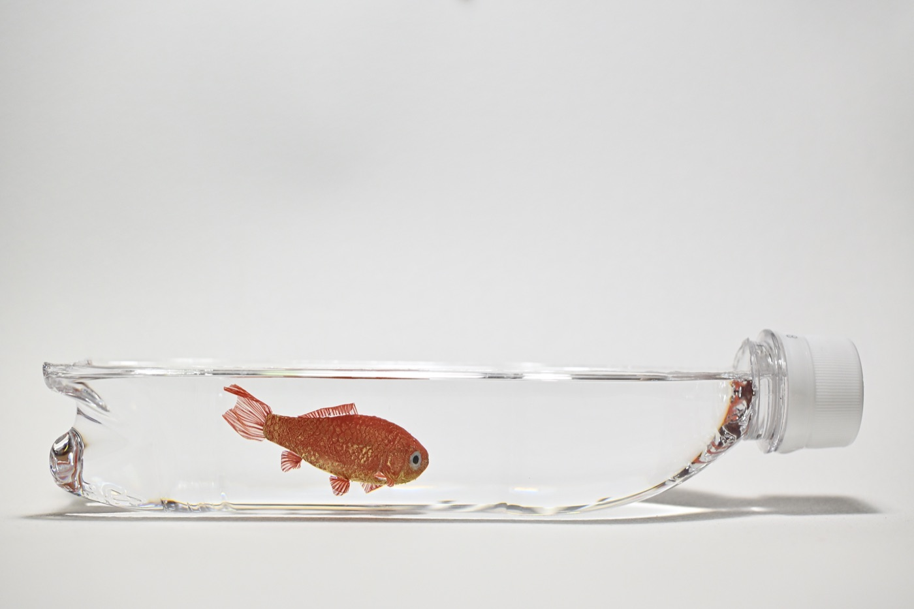
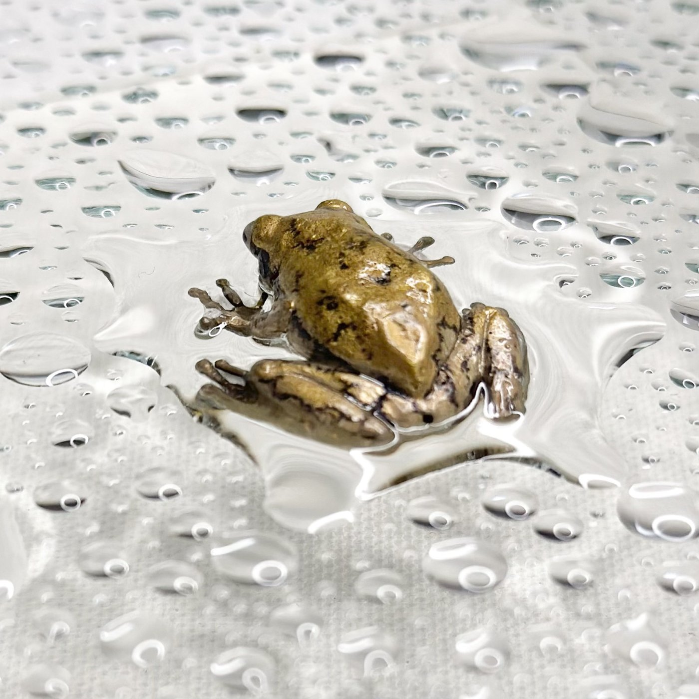
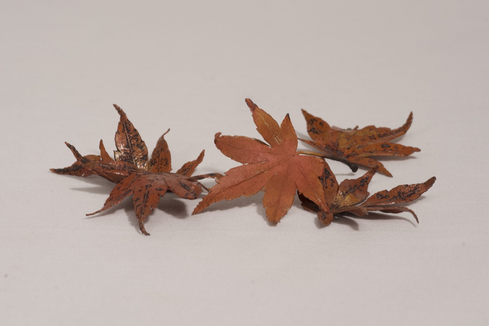
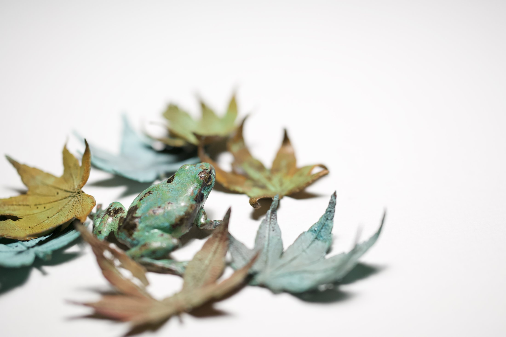
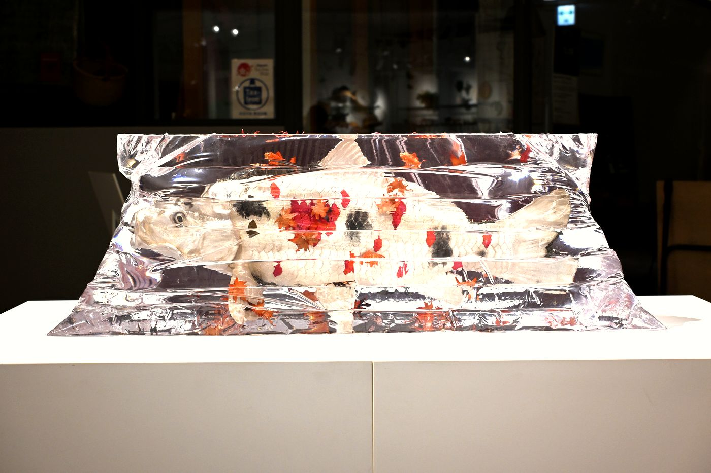
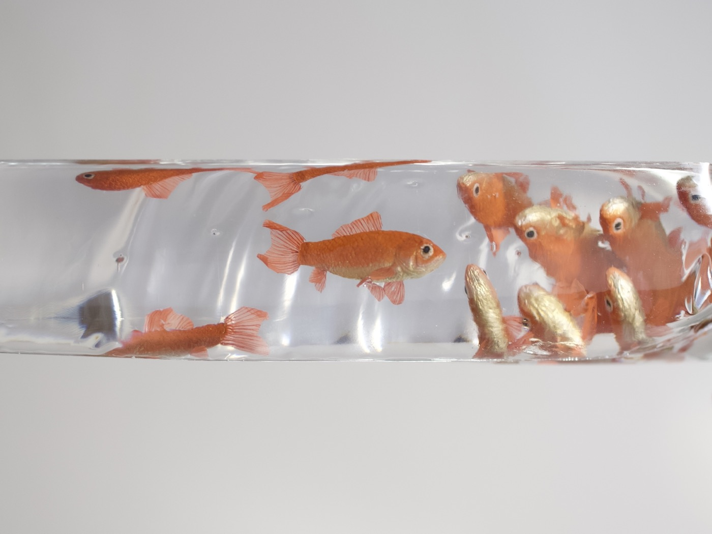

江戸の職人は、鉄の海老を動かしてみせた。
一明治の名工は、象牙の筍を本物と見分けがつかなくした。
二動く、似る。日本の写実は、そのたびに世界を驚かせてきた。
そして今、似せることは機械の仕事になった。
河﨑海斗は、三つめの問いを立てる。何がそろえば、それは「在る」のか。
三
金魚は、水がなければ金魚でいられない。だから河﨑は、金属で金魚を鋳り、樹脂で水をつくる。

蛙には雨を。

紅葉には、冷え込む朝を。溶けた銅は、冷える一瞬に赤く色づく。本物の紅葉が色づくのと、同じ理由で。
これを、工芸リアリズムと呼ぶ。
工芸とは、人間を含めた生態系を表現する営みである。
素材・環境・身体・知覚の関係のなかで、何かが現に立ち上がる。その「現れ」をつくる。
それは技巧による写実ではない。存在の条件そのものを組み直す態度である。
KOGEI REALISM

日本の絵も言葉も、もともと生きものを一匹だけでは差し出さなかった。花鳥画は鳥を枝ごと描き、俳句は蛙を季節ごと詠んだ。
河﨑の個展の名は「カエルハジメテナク」「錦秋」。暦の言葉である。

修了制作では、錦鯉と百匹の和金と千枚を超える紅葉を、北斎の大波の構図に並べた。

素材と技法
鋳造、着色、研磨。日本の伝統的な鋳金の技法を土台に、金属が酸化し硫化して変わっていく色を、制作のなかに取り込む。
どの色をどう出すかは作家ごとに異なり、過去の記録はほとんど残っていない。求める一色のために、実験が繰り返される。
《思色和金》2025
- 鋳金の技
- 現代の素材
- 金属の色の知識
- 季節の言葉
- 絵の構図
使えるものはすべて、その一点のために呼び集められている。
動く、似る、在る。写実の三ページ目が、ここから始まる。